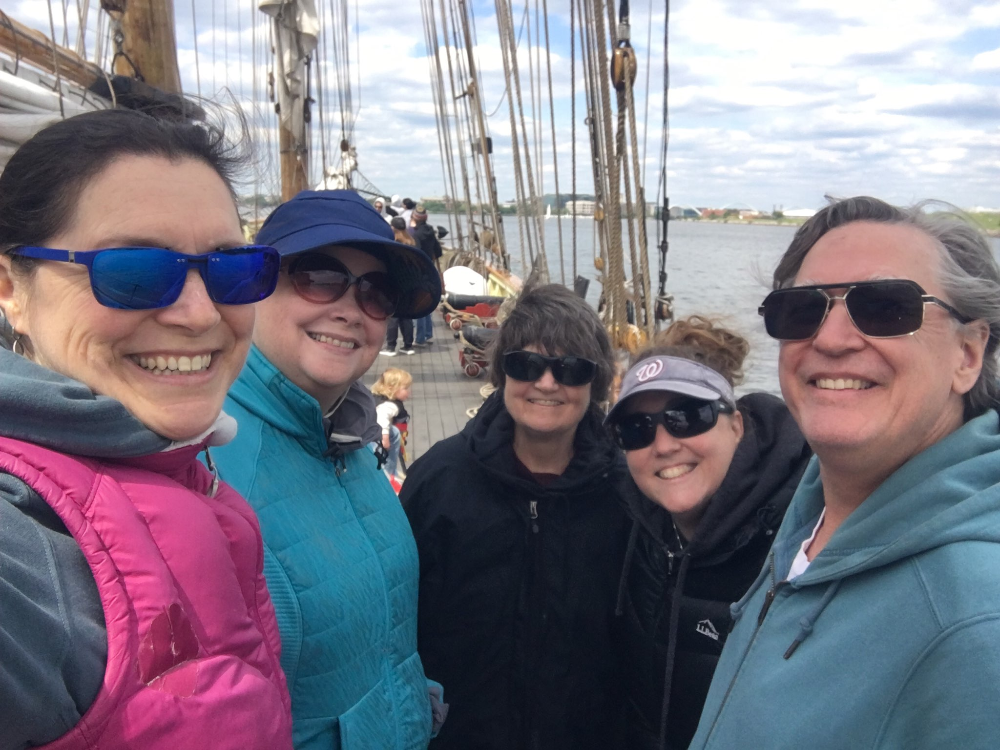
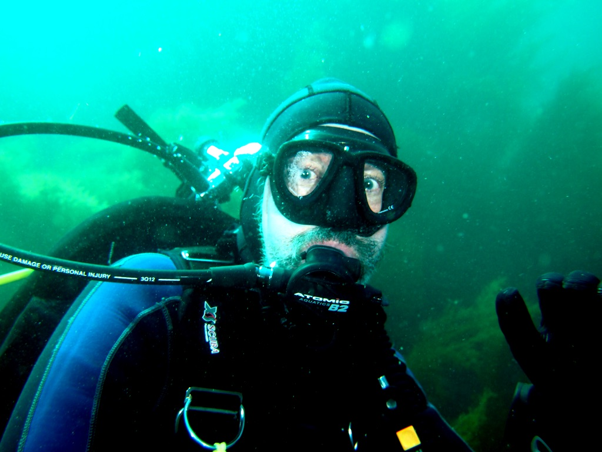

Patowmack Divers is a social group of people with a common interest: SCUBA DIVING!! Our members are male and female, from 20s to mid 70s. Our diving experience ranges from recently certified to retired instructors from warm water photographers, to deep wreck technical divers, and cave divers.
Patowmack Divers arranges several dive trips per year to locations off Virginia and Maryland seashores, Outer Banks, NC, and other great dive sites in the United States, the Caribbean, and beyond. Group purchasing power allows us to enjoy discounts on charters, rentals, and accommodations. We are also active in preservation, research, and environmental protection. We take full advantage of the aquatic expertise in the DC metro area for speakers at our meetings, including such diverse topics as Underwater Archeology, Reef Ecology, Treasure Hunting Expeditions, and Aquarium setup and operations.
We also have a number of other social outings throughout the year, including our annual Pasta Pig-Out where we enjoy fresh pasta, good sauce, good wine, and good conversation. We also like to check out local dive and marine-related activities such as museum visits, talks at the National Geographic and National Academy of Sciences, sailing on tall ships, refreshing CPR skills, kayaking tours, and more.
The short answer is anywhere. Club dive trips can be two divers or a dozen. Our recent dive trips include local quarries, West Palm Beach, Cozumel, Puerto Rico, Belize, St. Vincent, Palau, Sipadan, the Philipines, and Indonesia.
Our meetings are open. In addition to our members, we welcome prospective new members at most of our gatherings. All we ask is that you be courteous and kind. We're a friendly bunch!
Do you have the gift of gab? Do you have an interesting SCUBA-related presentation? Can you hold a room full of experienced divers entertained for 30 to 45 minutes? If the answer to all of these is yes, please contact us to schedule a talk in front of our club! Send us a message at patowmackdivers at gmail dot com; we'd love to hear from you!
Our July meeting will be on the second Monday, July 13, as people might be traveling for the Independence Day holiday.
Those who wish to join in person can do so at Mylo's Restaurant. As we have done before, we will have a Zoom space operating for joining virtually. We will cover club business at ~7:30 PM (or sometime after folks eat).
After club business, Diane will give a science talk.
It's getting to be picnic time! It's time to dust off that delicious jello salad recipe that your mom made back in the 70s and show us all how awesome she was! Yes, it's a potluck affair, so show us your culinary skills (not just jello, please). We'll be gathering outside at our secret locale (better known as Belle Haven Park in Alexandria) at 11am for good food, good company, and good conversation ... hopefully with good weather! If you'd like to learn about our upcoming events sooner, please look for an email from the club listserve. Not on the listserve? Here's a good reason to sign up! Just send an email to patowmackdivers at gmail dot com and an actual human will process your request!
A fun group of us gathered to enjoy our company in the beautiful shady spot selected by our president and his lovely wife! Even though the temps were pushing 90 degrees F, we were kept cool at our picnic tables with an abundance of shade. Fried chicken (2 varieties), german potato salad, smoked salmon hors d'oeuvres, pasta salad, cookies, AND jello were all on the menu! We had an impromptu lesson in the merits of the spotted lanternfly (in this area, NONE, though bats may be getting a taste for them), and we were entertained with the various methods of dispatching the young lanternflies!
Our June meeting will be on the first Monday, June 1, as usual.
Those who wish to join in person can do so at Mylo's Restaurant. We will not be able to have a zoom space for this meeting, so we hope we will see you at Mylo's. We will cover club business at ~7:30 PM (or sometime after folks eat).
After club business, we will have a social hour, where we will discuss future programming plans and perhaps watch some fun dive videos.
MAY THE FOURTH BE WITH YOU!!! Our May meeting will be on the first Monday, May 4, as usual.
Those who wish to join in person can do so at Mylo's Restaurant. As we have done before, we will have a Zoom space operating for joining virtually. We will cover club business at ~7:30 PM (or sometime after folks eat).
After club business, we can assure you that Darth Vader will not be attending. However, our own Paul McIlvaine will be yapping about his trip to Yap and Truk! This trip was 21 years ago, but I'm fairly sure Paul will manage to enthrall. If all else fails, perhaps he'll break out in song ...
Tall Ship Sailing Tour! The Pride Of Baltimore 2 will be in port in the area on several occasions in May. Continuing in our well-established tradition of touring tall ships as they visit ports in our area, we are planning a trek to check out the sailing experience on this tall ship. The date and time selected by our members is May 2 in Alexandria, Va from 2 to 4 pm. Spaces will certainly fill up quickly, so book yours early. To book, well, if you want to book you're too late as this event has passed. Some of our crew were unavoidably detained, but we still managed to make a good showing!

Our April meeting will be on the first Monday, April 6, as usual.
Those who wish to join in person can do so at Mylo's Restaurant. As we have done before, we will have a Zoom space operating for joining virtually. We will cover club business at ~7:30 PM (or sometime after folks eat).
After club business, Jim Christenson will regale us with tales of "Jim's Excellent Diving Adventures!"

Our world-notorious Pasta Pig-Out will be on Saturday, March 7 for club members in good standing (and their guests).
This jolly event, the lowest form of dinner party, will be held (in person, of course) at our president's secret lair. Sign up to bring an Italian dish (and your wine of choice, if you wish), and a good time will be had by all.
Our March meeting will be on the first Monday, March 2, as usual.
Those who wish to join in person can do so at Mylo's Restaurant. As we have done before, we will have a Zoom space operating for joining virtually. We will cover club business at ~7:30 PM (or sometime after folks eat).
After club business, we will have a discussion on dive operator safety. Do you know how to tell whether a dive operator had adequate safety protocols in place? Come tell us! Of course, we have our own ideas for discussion, but we'd love to hear your views, too.
Our February meeting will be on the first Monday, February 2, as usual.
Those who wish to join in person can do so at Mylo's Restaurant. As we have done before, we will have a Zoom space operating for joining virtually. We will cover club business at ~7:30 PM (or sometime after folks eat).
After club business, we will have a presentation from Kris and Dain Wetterstrand on their on-land adventures in Iceland.
Our January meeting will be on the first Monday, January 5, as usual.
Those who wish to join in person can do so at Mylo's Restaurant. As we have done before, we will have a Zoom space operating for joining virtually. We will cover club business at ~7:30 PM (or sometime after folks eat).
After club business, we will have a presentation from Liz Clough about her tip to Raja Ampat.
Patowmack Divers meets the first Monday of the month, unless it's a federal holiday, in which case we will select a meeting date to work with club members and Mylo's.
We are now holding hybrid meetings giving divers the option of joining us in person at Mylo's Grill (6238 Old Dominion Dr., McLean, VA 22101) or on Zoom. We indulge in a social half hour starting at 7:00 pm. This is a chance to talk, order drinks and food, etc. The meeting starts with club business at 7:30. Our meetings usually end between 9:00 and 9:30 pm.
 Follow us on Facebook!
or email us at patowmackdivers at gmail dot com
Follow us on Facebook!
or email us at patowmackdivers at gmail dot com
Copyright (c) 2011-2026 Patowmack Divers.com. All rights reserved.